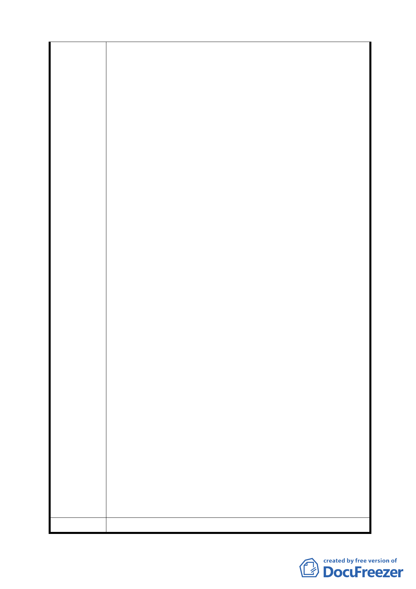

（3）建築基地規模建議刪除酌予調整，避免不當開發。
（4）建築規劃設計請考量本區風道之影響，不宜僅考量三合
街進入本區之視覺景觀，並請考量各面向之景觀。
（5）（十）請將綠建築要求事項納入全部建築規劃設計。並請
將屋頂設為斜屋頂。
（6）（十二）區內滯洪池請考量地形及參照前都市計畫內意見
辦理。
8. 公園綠地規劃建議本區施工前請用圍離保留，並將以前會
議所提修正事項納入考量，並與當地居民社團先行協調俾
找出最佳方案。(區內因設立四周圍籬已造成大量破壞)。
9. R-16 區北邊道路位於中崙窄溝上與原計畫結論保留中崙
窄溝為生態區不符，請保持一定間距確保生態區間(越下
游越寬)。
10.R-16 區道路離奇岩抽水站綠地太近，希在奇岩抽水站東
邊保持綠地，以利附近之生物(鳥類、蟲類等)棲習地完整
與車道之隔離，道路與 350 巷銜接。
11.公三(水塘)南岸臨接道路，希能有隔離，考量車道為一曲
線設計，否則干擾生物棲息。
12.各住宅區宜考量增設小公園遊戲區，以利居民身心舒緩，
並成為生態島嶼。
13.區內住 3 建地高度限制改為 32m 與原計畫 8 層樓高不符，
影響天際線甚巨，建議重新評估是否合宜。
14.細部計畫區內建築物宜規定設斜屋頂，並強制太陽能板發
電裝置及合綠建築設計雨水回收等相關事項。
15.本區街道方向設計僅考量水程，未考慮風道效應，僅現在
因工地週邊圍牆即造成風無法流動，而使溫度生高，造成
溫室效應，如日後 32 公尺高房興建，溫室效應更加嚴重。
16.本區樹木樹齡約 30 年或以上眾多。請優先考量移植本區
原有樹木，而而非砍伐後再種新小樹苗，以節省資源，不
浪費 30 年時間。
17.請將本案前數年開會所建議事項提出重新審視，避免造成
重覆作業，浪費時效。
18.磺港溪東側綠地興建戲水親磺港溪區，請查明磺溪為一溫
泉水區，不利植物生長，設親水區效果不佳。
委員會決議 依市府所送「第 574 次臺北市都市計畫委員會議決議回應資
15